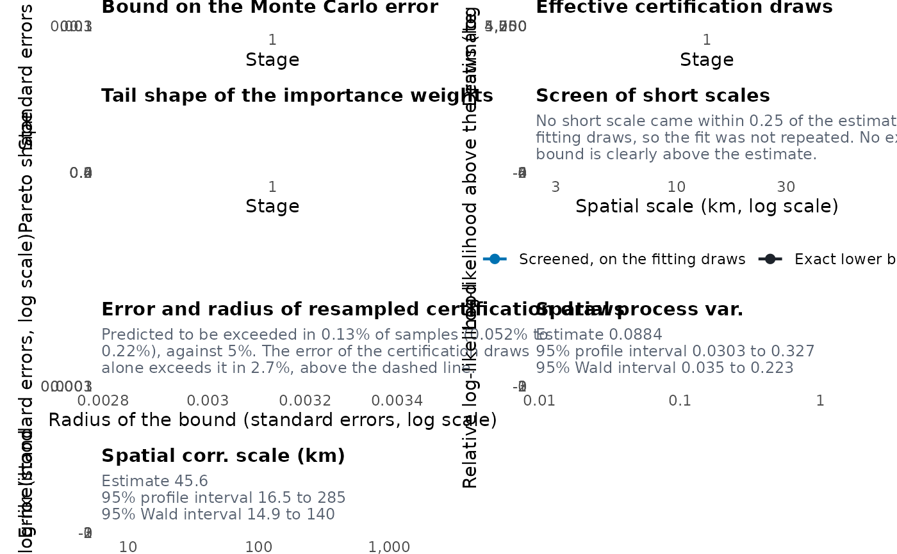
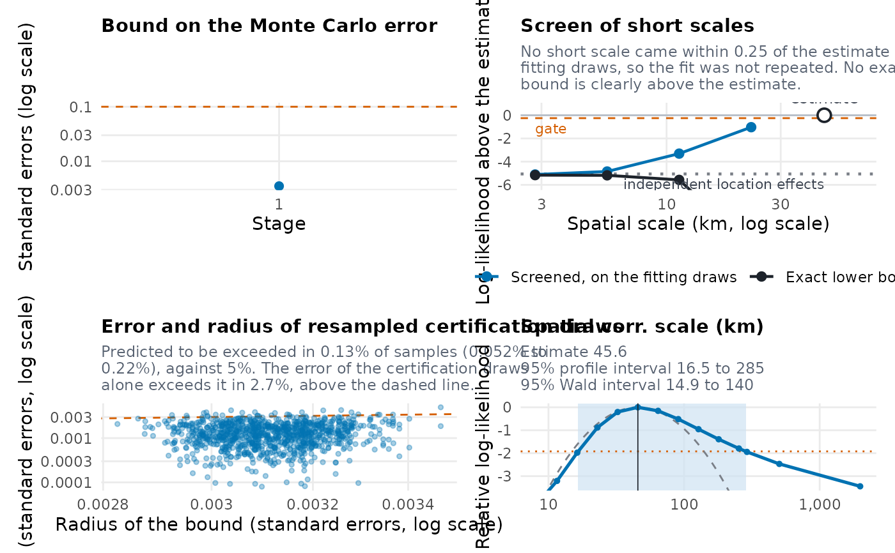

Plot method for objects of class "RiskMap_check" from
check_fit(). It draws the figures of the checks that were computed,
and never computes anything itself, so an extra check runs once in
check_fit(). By stage of certified Monte Carlo maximum likelihood, the
panels show the bound on the Monte Carlo error against the tolerance
("certificate"), the effective certification draws
("effective_draws"), the tail shape of the importance weights against
its limit of 0.7 ("pareto_k") and how far the estimates moved
("moves"). Two more panels come from what the fit recorded. For a
variance held at zero whose slope was tested, "held_variances" shows
the slope of the log-likelihood in that variance at zero with its
interval of 2.58 standard errors each side, the test of the fit, so that
the likelihood clearly rises as the variance leaves zero when the whole
interval is above zero, and clearly falls when it is below. The panel
"screen" shows the screen of short scales of the check for other
maxima. On a log scale of distance it gives, at each short scale, the
log-likelihood estimated on the fitting draws above that of the
estimate, which repeats the fit from the best such scale when one comes
within 0.25 of it (the dashed line), and the exact lower bound on the
likelihood there, with the likelihood with independent location effects,
the limit as the scale goes to zero, as a dotted line. An exact bound
clearly above the estimate shows that the estimate is not the maximum
likelihood estimate. For a fit with the spatial variance at zero and a
nugget, the panel adds the exact bound over longer scales for each share
of the variance in a spatial effect. With the extra check "radius",
the panel "radius" shows the error of each resampled sample of
certification draws against the
radius the fit would use for it, the larger of its own and a
replicate's, in standard errors, with the line where they are equal. Its
subtitle gives the predicted rate at which the radius is exceeded, as in
the row of the check, and the share of samples whose error exceeds the
radius, as in summary.RiskMap_check(), from many more pairs of samples
than the panel shows. With
the extra check "profile", each profiled parameter has a panel of its
profile likelihood, named "profile_" followed by the parameter, such
as "profile_phi".
Usage
# S3 method for class 'RiskMap_check'
plot(x, which = NULL, ...)Arguments
- x
An object of class
"RiskMap_check".- which
Names of the panels to draw, among
"certificate","effective_draws","pareto_k","moves","held_variances","screen","radius", the panels of the profiles, such as"profile_phi", and"profile"for every profile. The default is every panel that has something to show. A chosen panel with nothing to show gives a message saying why, and which extra check ofcheck_fit()would compute it. If no panel has anything to show,plot()stops with those messages.- ...
other parameters.
Examples
# \donttest{
data(liberia)
liberia <- sf::st_as_sf(liberia, coords = c("long", "lat"), crs = 4326)
fit <- glgpm(
npos ~ log_elevation + gp(kappa = 0.5), denominator = ntest,
data = liberia, model_crs = 32629, family = "binomial", messages = FALSE
)
checked <- check_fit(fit, extra = "all")
#> ℹ Computing the profiles of the 2 covariance parameters and the predictions of
#> how often the radius of the bound is too small, which should take about 41
#> seconds, from the 2 seconds the fit took.
plot(checked)

plot(checked, which = c("certificate", "screen", "radius", "profile_phi"))

# }